跟著喜歡的名字，走進首爾的日常。
ARTISTS.
Music, style & a world of their own.
Different voices. One shared rhythm.
A new world, beyond the ordinary.
Every song begins another story.
Find a little more joy in every beat.
PLACES & STORIES
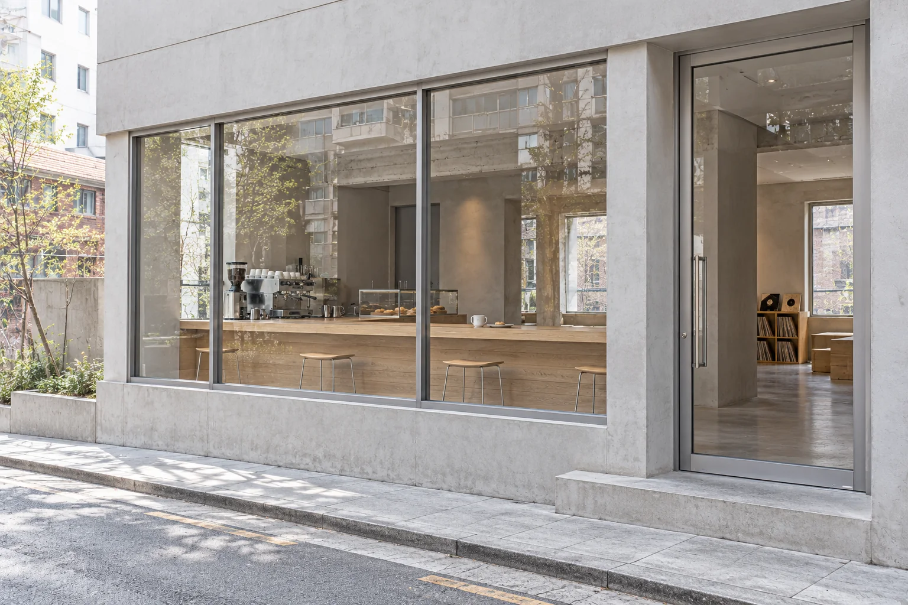
一杯咖啡的時間，遇見音樂之外的日常。
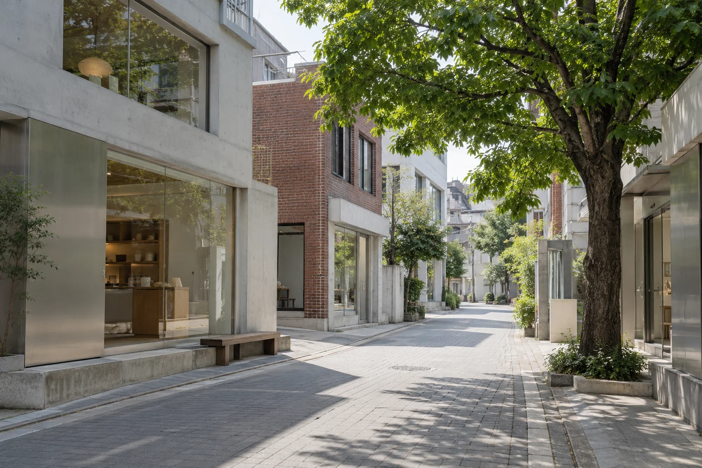
轉進綠意環繞的街角，收藏自己的城市節奏。
沿著喜歡的畫面，發現這座城市不同的樣子。
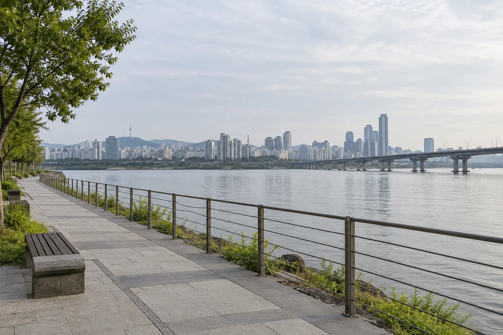
從舞台走向城市，留一點時間給河畔的晚風。
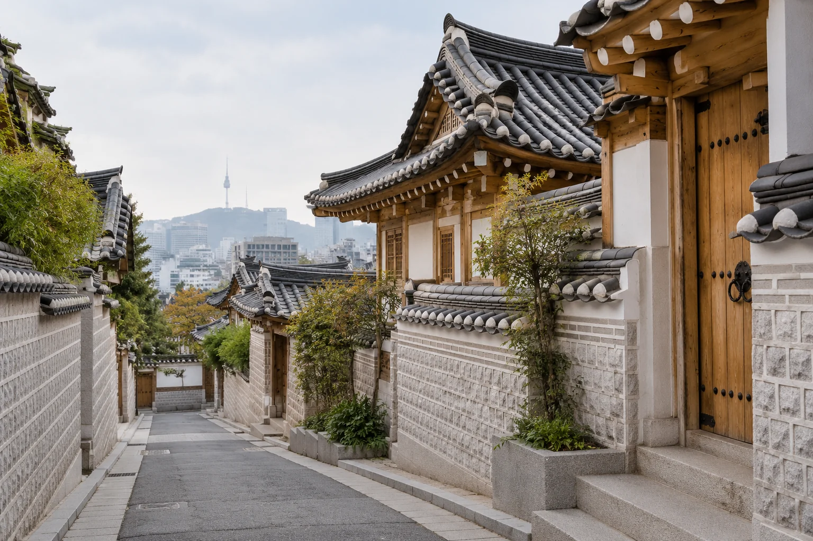
穿過屋簷與石板路，聽見首爾溫柔的聲音。
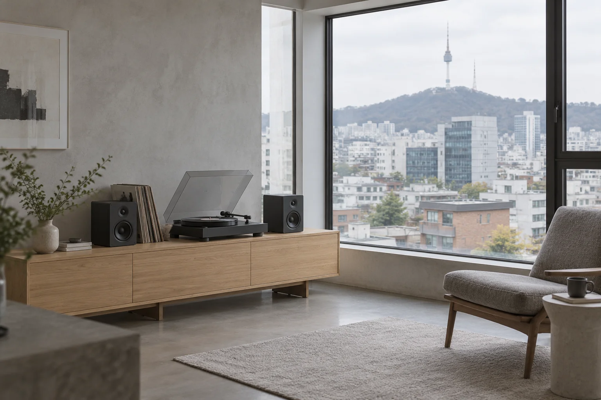
放一張唱片，慢慢聽見這座城市的聲音。
ITINERARIES
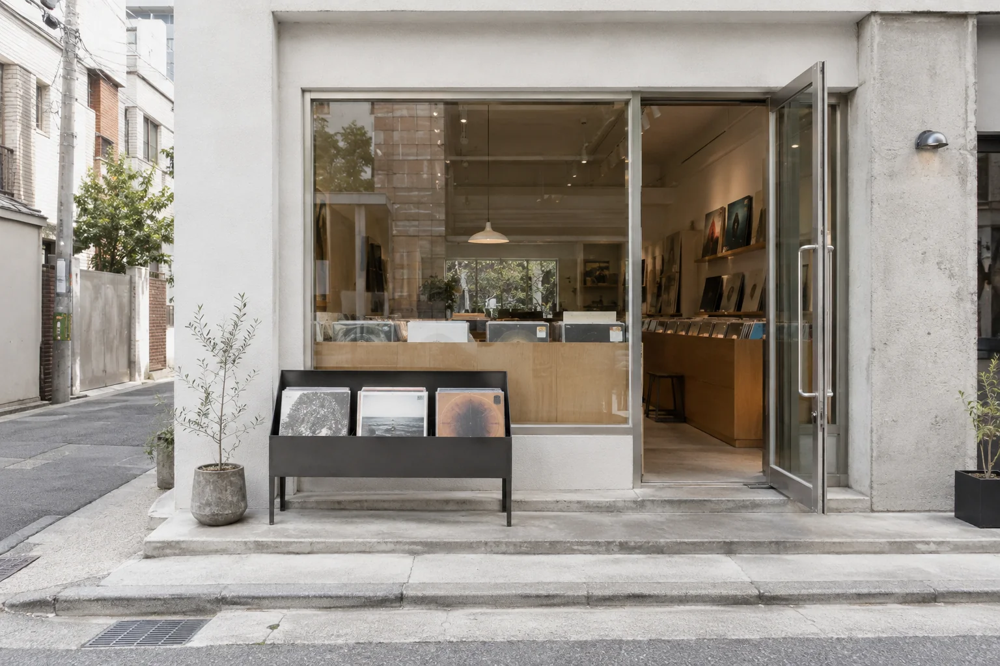
首爾 · 音樂巡禮2天1夜
從聖水咖啡到弘大唱片店，留一晚給漢江的城市風景。
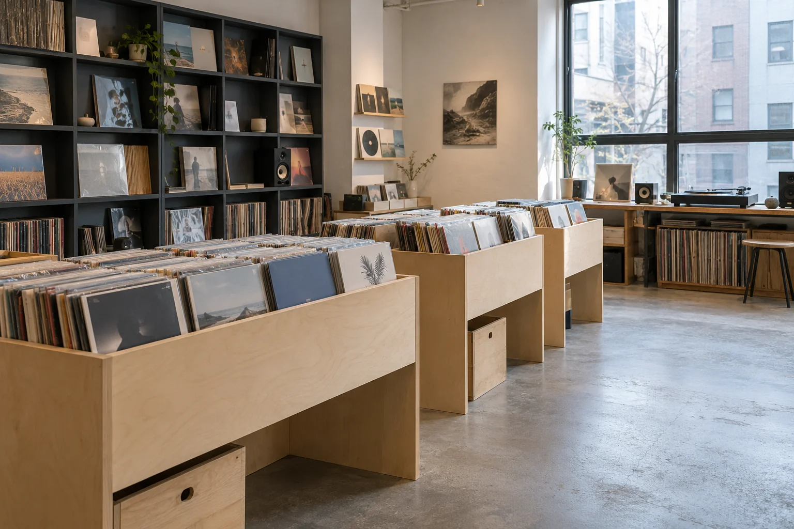
首爾 · 音樂巡禮1日遊
走訪弘大的唱片店與聆聽空間，用一天收藏首爾的音樂日常。
首爾 · 城市漫遊半日遊
午後沿著漢江慢慢走，等一場日落，再看河岸亮起燈光。
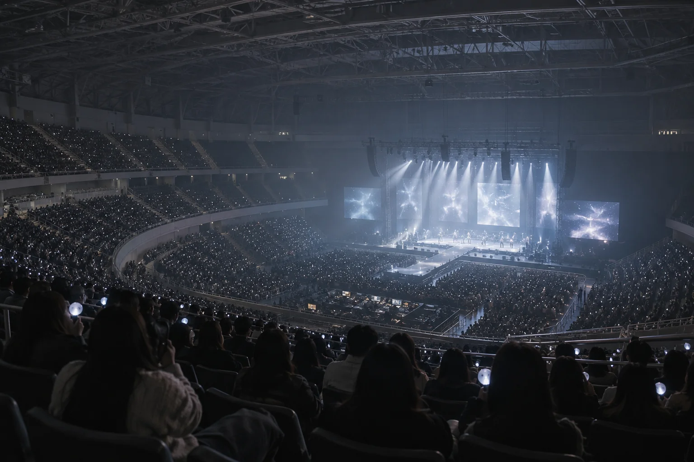
把演唱會前後的空檔，安排成一個有咖啡與散步的首爾週末。
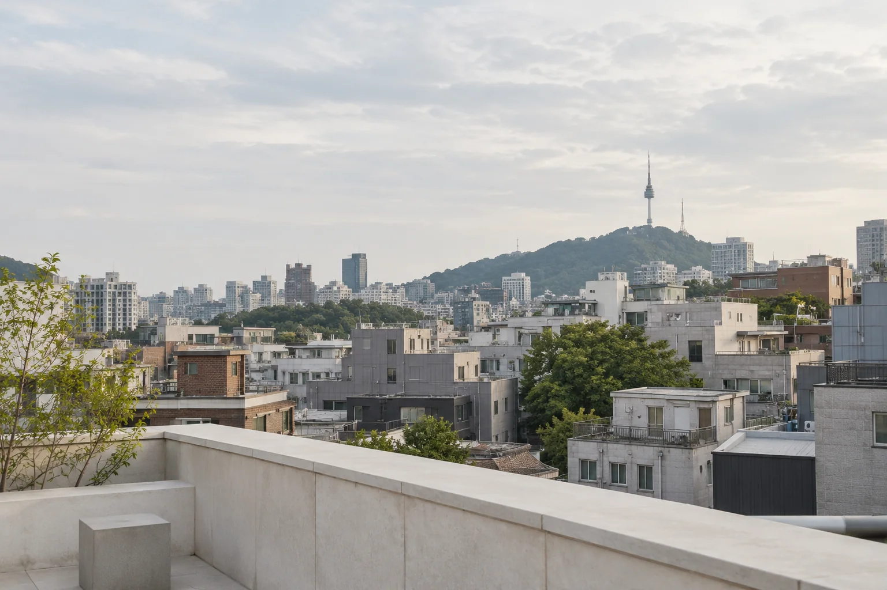
首爾 · 城市漫遊3天2夜
用三天的步調，依序收藏首爾的街區、音樂空間與城市夕景。
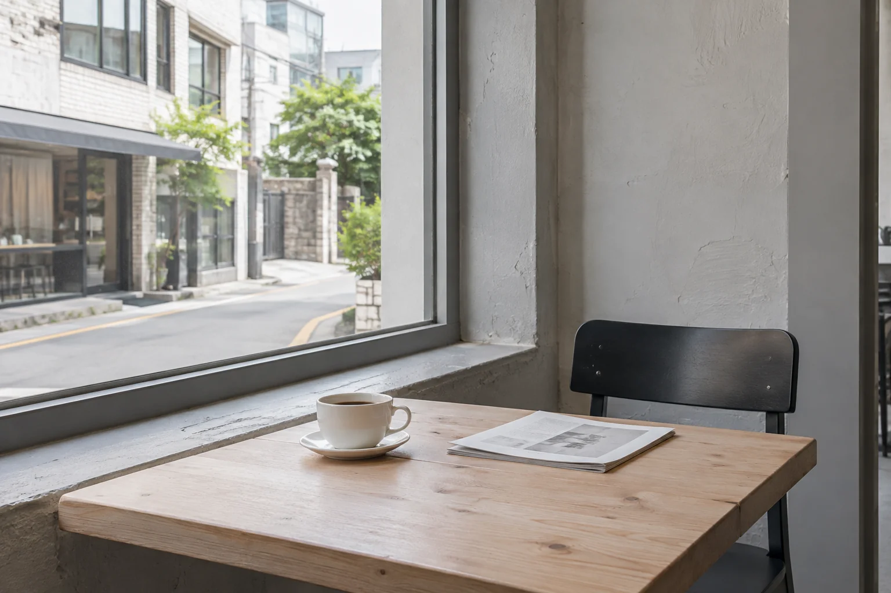
首爾 · 咖啡散步1日遊
從窗邊的一杯咖啡出發，沿著附近巷弄走進選物小店。
搜尋藝人足跡，收藏想去的地方。用 STarTown APP 規劃你的韓流旅程。
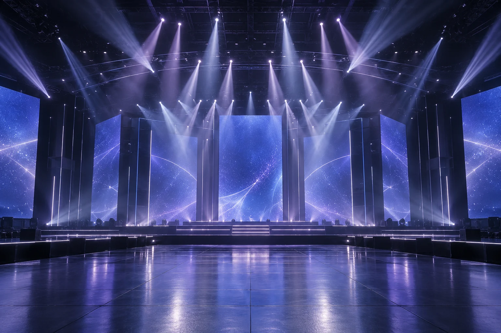
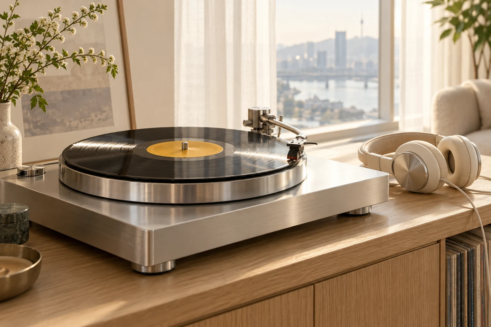
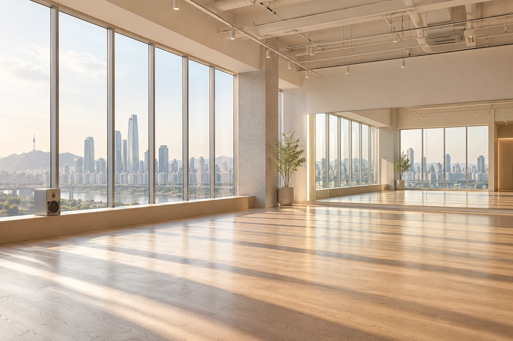
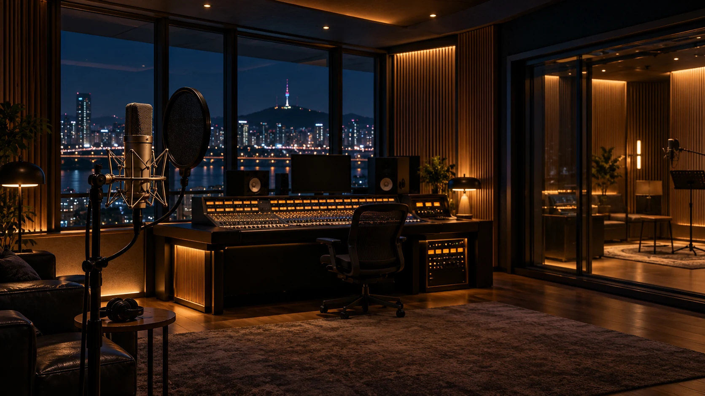
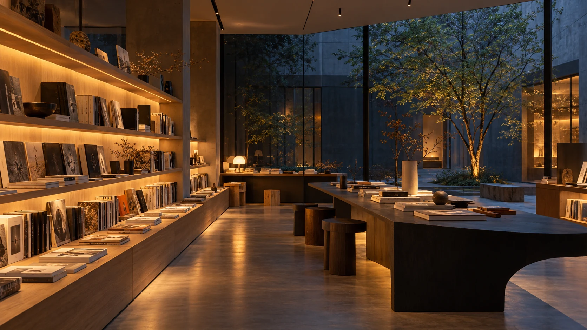
藝人與團體
偶像足跡
韓流行程